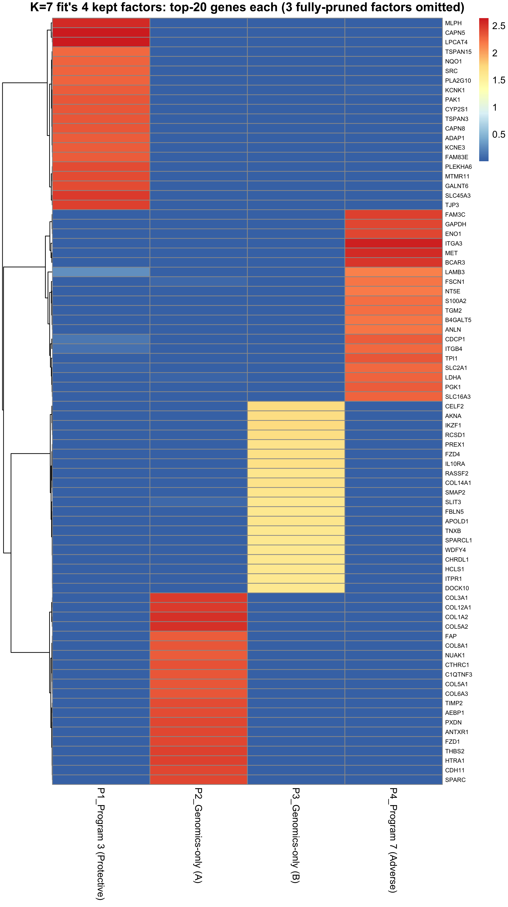
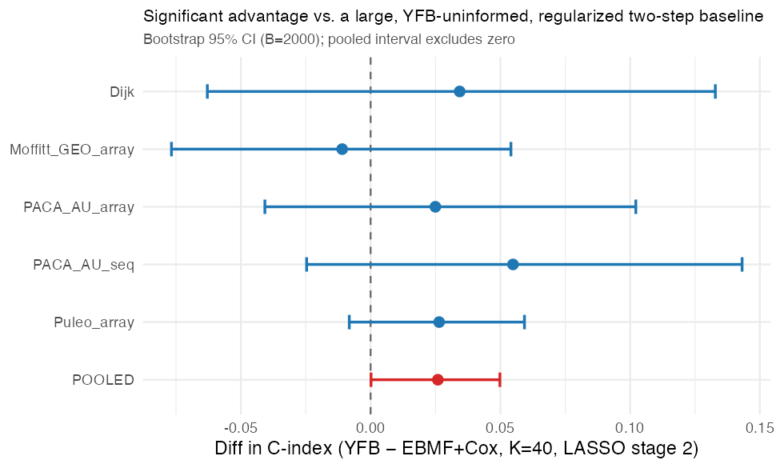
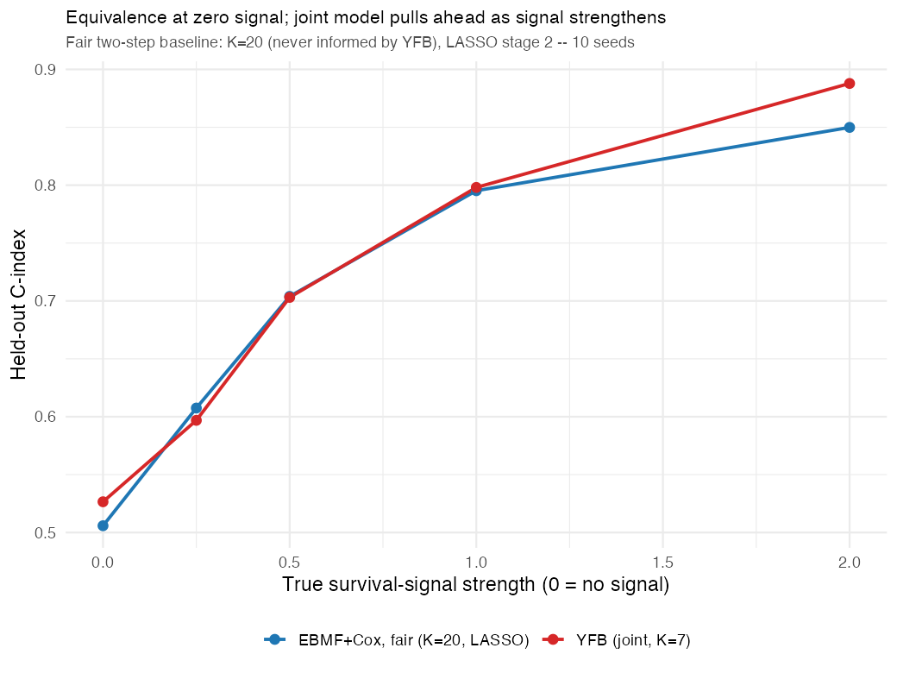

6 August 21, 2026
Summary
Model specification (§2). The full YFB model is written out: both likelihoods, the priors on each latent variable, the variational posteriors, and the ELBO the CAVI updates maximize. All four update formulas (\(\beta\), \(L\), \(F\), \(\tau\)) are provided as well.
\(K\) selection now uses ARD pruning plus ELBO, not cross-validated C-index (§3.1).
- Fitting at \(K_{\text{init}} \in \{5,\dots,20\}\) gives a stable 2 survival-active factors for every \(K \ge 7\); added capacity goes entirely to dead factors, which is due to ARD (see table in §3.1).
- \(K=5\) has the best ELBO of the whole grid but generalizes far worse (C=0.596 vs. 0.627); \(K=6\) loses on both counts (worse ELBO than \(K=7\), and C=0.597). ELBO ranks candidate \(K\)’s, but any \(K\) that fails externally is excluded first.
- \(K=7\) (2 survival-active + 2 genomics-only = 4 kept factors) selected, with \(K=9\) as a near-tied alternative. The \(K=5\) vs. \(K=7\) gap is significant pooled across cohorts (§3.3).
- The fit is stable across starting points: 15 restarts per \(K\) all reach the same best-ELBO solution, which closes the factor-stability question left open on 8/3.
The joint model outperforms an independent two-step baseline (§3.5). Against a baseline model (\(K\)=40 never informed by YFB, LASSO at stage 2), YFB’s advantage is +0.026, 95% CI [0.0002, 0.0498] pooled across the 5 external cohorts, and it outperforms in all 6 configurations tested. A simulation reproduces the expected external C-index curve (equivalence at zero signal, YFB ahead as signal grows).
Open discussion item: the selection procedure over-counts survival-active factors in simulation (§3.2). 41 of 45 fits found more than the true number, caused by small spurious survival coefficients attaching to real-but-non-prognostic programs. A relative-magnitude threshold fixes it in simulation but must not be applied to the real data, where it would discard Program 3 despite independent external confirmation. Needs a decision on how to handle this for future datasets.
Factor biology (§2.5). Programs 3 and 7 were characterized in the July 15 cycle, where five independent methods agreed on Program 7 as adverse/basal-like and Program 3 as protective/classical. Extended this cycle to the 2 genomics-only factors, which had never been reported: Program 5 reads as desmoplastic stroma and Program 6 as immune infiltrate, and the 4 kept factors together recover DeSurv’s full 3-factor structure. The open question is process: this work was self-directed rather than group-directed, so the approach is worth confirming before the labels carry into the manuscript.
Logistics. Finalize committee (Lin, Liu, Rashid, Hudgens, Van Deinse); prelim targeted for end of Fall 2026; 8/27 lab meeting preparation (topic aside from project update? Semester goal setting?).
Questions
- Selection of starting K value prior to pruning (tested a range and currently settled on 7)?
- Settle on method for selecting K (CV uses survival data twice vs. pruning from larger starting value)
- general scope for remainder of project
6.1 Recent Updates
The 8/3 entry closed two open questions about the two survival-active gene programs (Program 7, adverse; Program 3, protective): they reproduce in a fully unsupervised fit (not an artifact of the survival term), and they independently match DeSurv’s published basal-like/classical tumor axes. Focus then shifted toward the manuscript and toward a list of action items from that meeting. This section tracks each of those items, both the ones closed this cycle and the ones still open.
6.1.1 Completed
- Bootstrap C-index confidence intervals + paired significance test (2026-07-16): wrote the bootstrap-CI code and used it to compare the recommended model against a two-step (unsupervised-factorization-then-Cox) baseline, finding a significant advantage. Re-examined this cycle (§3.5): that specific baseline had its own weaknesses (unregularized stage 2, an unmatched \(K\)), so it was checked against a properly-built independent baseline instead. The advantage holds up.
- Consolidated progress notebook (this book): one chapter per advisor meeting, backfilled April 29 through August 3 and pushed 2026-08-03.
- Model specification write-up: the 8/3 notes’ top immediate item (“write out current model form, pseudo-algorithm and major update steps”) is §2 of this chapter, below.
- How \(K=7\) was chosen, and whether that answer is trustworthy (2026-08-19/20, this cycle; §3 below): \(K=7\) was originally chosen by cross-validated held-out C-index, which uses the survival outcome to pick model structure. This was the ARD-vs-cross-validation comparison raised at the last meeting. Re-derived it instead from model fit alone (ELBO), cross-checked against external validity, and separately stress-tested the procedure in a simulation where the true number of factors is known. See §3.
- Factor stability across random seeds (8/3 open item). Refitting each \(K \in \{5,\dots,10\}\) from 15 different starting points (1 SVD initialization + 14 random) converged to the same best-ELBO solution every time, at every \(K\); random restarts never beat the SVD initialization. The 2 survival-active programs are therefore not an artifact of one lucky starting point.
6.1.2 Items to address
- Consistency of the 5 non-survival-active factors across the external cohorts. Programs 3 and 7 have been checked thoroughly (pathway enrichment, subtype correlation, DeSurv overlap, cross-cohort hazard ratios); the other factors in the \(K=7\) fit have not had the equivalent check.
- Aligning on the factor-biology work (§2.5). This was pursued independently rather than at the group’s direction, so the approach needs review even though the existing results may turn out to be sufficient.
- Slides/figures for the 8/27 lab meeting progress update, prepared separately from this chapter.
- Finalize committee: Dr. Lin, Dr. Liu, Dr. Rashid, Dr. Hudgens, Dr. Van Deinse (Social Work).
- Schedule prelim for end of Fall 2026.
6.1.3 Ongoing
- Weekly recurring meetings (Thursdays?) and a written update each time (this book).
- Frequent pushes to the model repository & writing in separate manuscript repo.
- Prep for leading 8/27 lab meeting
- The cohort-membership indicator (
cohort_id) absorbs genomic platform offsets only; it never carries survival information, and is off by default (no observed benefit).
6.2 Model Specification: YFB
Current model form: “YFB” linear predictor in Cox model (code/fit_cox_on_yf.R), \(\eta = (YF)\beta\), referred to here as YFB.
6.2.1 Generative model
Genomics model. The observed expression matrix is a low-rank product plus feature-specific Gaussian noise: \[ Y = L F^\top + E, \qquad E_{ij} \sim \mathcal{N}\!\left(0, \tau_j^{-1}\right) \]
- \(Y\) is \(n \times p\) (patients \(\times\) genes), column-centered.
- \(L\) (\(n\times K\)) is the patient-loading matrix: how strongly patient \(i\) expresses gene program \(k\).
- \(F\) (\(p \times K\)) is the factor matrix: which genes, and how strongly, make up program \(k\).
- \(\tau_j\) is gene \(j\)’s noise precision (inverse variance). Each gene is allowed its own noise level.
Projection onto observed expression. Rather than scoring survival risk from the latent, uncertain loadings \(L\), YFB projects the observed data directly onto the fitted programs: \[ Z\!F = Y \tilde F, \qquad \tilde F_{\cdot k} = \frac{F_{\cdot k}}{\lVert F_{\cdot k} \rVert_2} \]
- \(\tilde F\) is \(F\) with each program’s gene-weight column rescaled to unit \(L_2\) norm.
- \(Z\!F\) (\(n \times K\)) is each patient’s projection score onto each program: a direct function of the data \(Y\) and the fitted \(F\), not a latent variable with its own posterior uncertainty.
- The rescaling is necessary: without it, \(\lVert Z\!F_{\cdot k}\rVert \sim O(\sqrt{np})\) grows with the size of the data, and the survival coefficients get driven toward zero by scale alone (not because there’s no real signal).
Survival model (Cox proportional hazards). Patient risk is a linear combination of the projection scores: \[ \eta_i = (Z\!F)_{i\cdot}\,\tilde\beta, \qquad h(t_i \mid \eta_i) = h_0(t)\exp(\eta_i) \]
- \(\eta_i\) is patient \(i\)’s linear predictor (log relative risk).
- \(\tilde\beta\) (\(K \times 1\)) is the survival coefficient vector: how prognostic each program is.
- \(h_0(t)\) is an unspecified baseline hazard (standard Cox); it cancels out of the partial likelihood and is never estimated.
- \(\beta\) acts on \(Z\!F\) (data \(\times\) fitted \(F\)), not on \(L\): \(L\) does not appear in the survival likelihood at all under YFB. This is the key structural difference from the LB parameterization (\(\eta = L\beta\)), where \(L\) carries both roles.
6.2.2 The full model: likelihood, priors, and posteriors
This is the complete probabilistic model the update steps below are derived from: the two likelihoods, the priors on each latent variable, and the objective (the ELBO) that CAVI actually maximizes. Full derivation: derivations/cox_on_YF/ELBO/ELBO_YF_derivation.pdf.
Priors. Each latent variable is given an Empirical Bayes prior. A family is chosen and the specific shape within that family is estimated from the data itself: \[ l_{ik} \overset{\text{iid}}{\sim} g_L \in \mathcal{G}_L, \qquad f_{jk} \overset{\text{iid}}{\sim} g_F \in \mathcal{G}_F, \qquad \tilde\beta_k \overset{\text{iid}}{\sim} g_{\tilde\beta} \in \mathcal{G}_{\tilde\beta} \]
- \(g_L\) and \(g_F\):
point_exponential, a one-sided (non-negative) sparse family, estimated via Empirical Bayes Normal Means (EBNM). Loadings and gene weights can be zero or positive, never negative. - \(g_{\tilde\beta}\):
normalin the recommended configuration, a ridge-like shrinkage prior with no exact point mass at zero. Apoint_normal(spike-and-slab) alternative exists in the code but collapses \(\tilde\beta\) to 0 for every \(K\) under cross-validation (5/28 entry);normalis the prior actually used to produce every result in this notebook. - \(\tau_j\) has no prior in this model; it is fit by constrained maximum likelihood (Step 2 below), not a full variational treatment, so it contributes no KL term to the objective below.
Full joint likelihood. \(t = (t_1,\ldots,t_n)\) are the observed survival/censoring times and \(\delta = (\delta_1,\ldots,\delta_n) \in \{0,1\}^n\) the event indicators (\(\delta_i=1\): event observed; \(\delta_i=0\): censored). Together these two vectors are the survival outcome. Conditional on the latent variables, the genomics data and the survival outcome are independent: \[ P(Y, t, \delta \mid L, F, \tilde\beta, \tau) = \underbrace{P(Y \mid L, F, \tau)}_{\text{genomics}} \;\times\; \underbrace{P(t, \delta \mid Y, F, \tilde\beta)}_{\text{survival}} \] \(P(Y \mid L, F, \tau)\) is the Gaussian genomics likelihood implied by the genomics model above (product over \(i,j\) of \(\mathcal{N}(y_{ij};\,\mathbf{l}_i^\top\mathbf{f}_j,\,\tau_j^{-1})\)). \(P(t, \delta \mid Y, F, \tilde\beta)\) is the Cox partial likelihood, a function of the linear predictor \(\eta_i = (Z\!F)_{i\cdot}\tilde\beta\) from the survival model above. The survival term conditions on \(F\) and the observed \(Y\) (through \(Z\!F\)), not on \(L\). This is exactly what removes \(L\) from the survival side of the model under YFB.
Posteriors. \(q(L)\), \(q(F)\), and \(q(\tilde\beta)\) are the variational posteriors: CAVI’s best-fitting approximation to the true, intractable posterior \(P(L, F, \tilde\beta \mid Y, t, \delta)\), under a mean-field assumption that they factorize independently: \(q(L, F, \tilde\beta) = q(L)\,q(F)\,q(\tilde\beta)\), each further factorized coordinate-by-coordinate (\(l_{ik}\), \(f_{jk}\), \(\tilde\beta_k\) each get their own independent posterior). They are not the priors \(g_L, g_F, g_{\tilde\beta}\) above: the prior is the population-level shape estimated once per update from all the data; the posterior is the individual belief about one specific \(l_{ik}\) (or \(f_{jk}\), \(\tilde\beta_k\)) after seeing the data, given that prior. Each posterior’s mean \(\mathbb{E}_q[\cdot]\) (written \(\bar l_{ik}\), \(\bar f_{jk}\), \(\bar\beta_k\) below) and second moment \(\mathbb{E}_q[\cdot^2]\) are both tracked, since they differ whenever there’s posterior uncertainty. This distinction matters for the \(\tau\) update (Step 2) and for the error-in-variables correction in the survival term.
The variational objective (ELBO). CAVI maximizes the Evidence Lower Bound, written \(\mathcal{L}\) here (script L, not to be confused with the loading matrix \(L\)): \[ \mathcal{L} = \mathbb{E}_q\big[\log P(Y \mid L, F, \tau)\big] + \mathbb{E}_q\big[\log P(t, \delta \mid Y, F, \tilde\beta)\big] - \mathrm{KL}\big[q(L)\,\|\,g_L\big] - \mathrm{KL}\big[q(F)\,\|\,g_F\big] - \mathrm{KL}\big[q(\tilde\beta)\,\|\,g_{\tilde\beta}\big] \] The first two terms, \(\mathbb{E}_q[\log P(Y\mid L,F,\tau)]\) and \(\mathbb{E}_q[\log P(t,\delta\mid Y,F,\tilde\beta)]\), are the two log-likelihoods from above, each averaged over the current posteriors: how well the model fits the data. Each \(\mathrm{KL}[q(\cdot)\,\|\,g] = \mathbb{E}_q\!\left[\log\frac{q(\cdot)}{g(\cdot)}\right]\) is the Kullback–Leibler divergence between a posterior and its prior; it penalizes posteriors that drift too far from the prior, which is what produces shrinkage. The survival log-likelihood term is not conjugate to a Normal prior, so it’s handled by a second-order Taylor expansion around the current linear predictor \(\hat\eta\) (a local Gaussian approximation) before the EBNM updates below can be applied.
Inference is Coordinate Ascent Variational Inference (CAVI): each coordinate posterior above is updated in turn, holding the others fixed, which turns each update into an Empirical Bayes Normal Means (EBNM) problem: solve for the prior and posterior moments given a pseudo-observation \(x\) and its standard error \(s\). The exception is \(\tau\), which has a closed form.
6.2.3 Update steps (one outer CAVI iteration)
Each step below computes one of the coordinate posteriors defined above (\(q(\tilde\beta_k)\), \(q(l_{\cdot k})\), \(q(f_{\cdot k})\)), given the current pseudo-data from every other coordinate.
What \(A\) and \(B\) are. Every EBNM update below follows the same pattern: collect a precision \(A\) (how much information the data carries about this one coordinate; larger \(A\) means a more confident estimate) and a numerator \(B\) (a precision-weighted sum of the residual, or pseudo-data, relevant to that coordinate). The pair \((A,B)\) converts into a pseudo-observation \(x = B/A\) with standard error \(s = 1/\sqrt{A}\). That \((x,s)\) pair, together with the coordinate’s prior family, is what’s actually handed to the EBNM solver, which returns the fitted prior and the posterior mean and second moment. This structure is identical for \(\beta\), \(L\), and \(F\) below; only what goes into \(A\) and \(B\) changes. All three formulas were checked line-by-line against their source derivations (derivations/cox_on_YF/) and match exactly.
Step 0: Working response. Recompute \(\tilde F\), \(Z\!F = Y\tilde F\), and \(\eta = Z\!F\,\tilde\beta\); run one step of the Cox Newton–Raphson (Taylor) expansion at \(\eta\) to get the score \(u\), diagonal Hessian weight \(w\), and working response \(z = \eta + u/w\).
Step 1: For each factor \(k = 1, \dots, K\) (Gauss–Seidel: \(\beta_k \to l_k \to f_k\), in order):
\(q(\beta_k)\), survival coefficient. Covariate is \(Z\!F_{\cdot k}\), observed (no posterior variance term): \[ A_k = \alpha \sum_i w_i\, Z\!F_{ik}^2, \qquad B_k = \alpha \sum_i w_i\, z^{-k}_i\, Z\!F_{ik} \] \[ \left(\bar\beta_k,\ \overline{\beta_k^2}\right) \leftarrow \mathrm{EBNM}\!\left(x=\tfrac{B_k}{A_k},\ s=\tfrac{1}{\sqrt{A_k}}\right) \] where \(z^{-k}_i = z_i - \sum_{k'\ne k} Z\!F_{ik'}\bar\beta_{k'}\) is the working response with factor \(k\)’s own contribution removed, and \(\alpha \in [0,1]\) (default \(0.5\)) is the genomics/survival mixing weight. \(\alpha\) cancels in \(x_k = B_k/A_k\) (the EBNM pseudo-observation is \(\alpha\)-independent) but not in \(s_k = 1/\sqrt{A_k}\), so it still controls how strongly \(\beta_k\) is shrunk. Prior family:
normal(see the priors note above;point_normalis available but collapses to \(\beta=0\) under cross-validation). (Derivation:derivations/cox_on_YF/qBeta/qBeta_YF_derivation.pdf)\(q(l_{\cdot k})\), patient loadings, pure genomics. \(L\) carries no survival term under YFB: \[ A_{ik} = \sum_j \tau_j\, \overline{f_{jk}^2}, \qquad B_{ik} = \sum_j \tau_j\, R^{-k}_{ij}\, \bar f_{jk} \] \[ \left(\bar l_{ik},\ \overline{l_{ik}^2}\right) \leftarrow \mathrm{EBNM}\!\left(x=\tfrac{B_{ik}}{A_{ik}},\ s=\tfrac{1}{\sqrt{A_{ik}}}\right) \] where \(R^{-k} = Y - \bar L\bar F^\top + \bar l_{\cdot k}\bar f_{\cdot k}^\top\) is the genomics residual with factor \(k\) added back in. Prior family:
point_exponential(one-sided, non-negative weights, no “depletion” side). (Derivation:derivations/cox_on_YF/qL_unsupervised/qL_unsupervised_derivation.pdf)\(q(f_{\cdot k})\), gene-program weights. Pure genomics at the default survival-mixing weight \(\alpha_F = 0\) (a dual-source form exists for \(\alpha_F > 0\), unused in the recommended configuration; see
derivations/cox_on_YF/qF_supervised/qF_supervised_derivation.pdffor the general case): \[ A_{jk} = \tau_j \sum_i \overline{l_{ik}^2}, \qquad B_{jk} = \tau_j \sum_i R^{-k}_{ij}\, \bar l_{ik} \] \[ \left(\bar f_{jk},\ \overline{f_{jk}^2}\right) \leftarrow \mathrm{EBNM}\!\left(x=\tfrac{B_{jk}}{A_{jk}},\ s=\tfrac{1}{\sqrt{A_{jk}}}\right) \]
Dual-source \(F\) was tested, not left unused. Ran a 16-configuration experiment letting survival term inform gene-program loadings (analogous to DeSurv’s joint \(W\)) and found no benefit and some harm at higher weights, so we kept the simpler genomics-only \(F\), with survival entering only through \(\beta\) on \(Z\!F = Y\tilde F\). [Full method & results: DECISIONS.md, 2026-08-20 entries]
Step 2: \(q(\tau)\), closed form, no EBNM. \[ \bar R^2_{ij} = \left(Y - \bar L\bar F^\top\right)^2_{ij} + \sum_{k=1}^{K}\left[\overline{l_{ik}^2}\,\overline{f_{jk}^2} - \bar l_{ik}^2 \bar f_{jk}^2\right], \qquad \hat\tau_j = \frac{n}{\sum_i \bar R^2_{ij}} \] The bracketed term is the posterior-variance correction; it prevents \(\tau\) from being systematically overestimated by ignoring uncertainty in \(L\) and \(F\).
Step 3: Prediction. \[ \widehat{\eta}_{\text{test}} = \left(Y_{\text{test}}\, \tilde F_{\text{train}}\right)\tilde\beta \]
Step 4: Sign correction. After convergence, if training concordance of \(\widehat\eta = Z\!F\,\tilde\beta\) is below 0.5, flip \(\tilde\beta \to -\tilde\beta\) (equivalent to \(1 - C_{\text{train}}\)).
A second scalar, \(\lambda\), once multiplied the survival-side precision terms in the \(L\) update separately from \(\alpha\); retired 2026-07-12 as redundant with \(\alpha\) and removed from the code (DECISIONS.md).
6.2.4 Gene selection
- Rank genes per training cohort (TCGA-PAAD, CPTAC) by a combined mean expression + variance rank (similar to DeSurv approach), computed before normalization.
- Keep the top 3,000 genes by that rank, per cohort.
- Intersect the two cohorts’ gene sets: 2,064 genes survive (vs. 2,000 under a variance-only rank).
- Standardize per platform (\(z\)-score) after intersection, before fitting. This step is required as 10 of 12 non-per-platform preprocessing variants collapsed to \(\beta = 0\).
6.2.5 Factor composition (\(K=7\))
\(K_{\text{eff}}=2\) of the 7 fitted gene programs carry non-negligible survival weight: \(|\bar{\tilde\beta}_k| > 0.001\) (beta_thresh in classify_factors(), matching config/globals.yml’s k_selection$beta_threshold). The other 5 fall below that threshold and split into genomics-only (per-factor variance explained \(\text{PVE}_k > 1\%\)) and dead (\(\text{PVE}_k \le 1\%\), nothing retained).
Do we need to tune these quantities?: (1) survival coefficient threshold, (2) PVE threshold
Two separate decisions are involved here, and the table below only makes one of them:
- How many gene programs should the model fit (\(K\))? First proposed on 5/28 via cross-validated external C-index, but that justification is superseded this cycle (§3.1): ARD pruning within a large-\(K\) fit, combined with model fit (ELBO) across candidate \(K\)’s, using external C-index only as a floor to rule out a \(K\) that fits training data best but generalizes worse, not as the primary selection criterion. That updated procedure re-confirms \(K=7\) on its own terms. The table below takes this current, ARD/ELBO-validated \(K=7\) fit as given; it does not revisit the choice of \(K\) itself.
- Of those 7 fitted programs, which are actually prognostic, which are real biology with no survival link, and which are noise the model discarded? This is what the table answers, using this cycle’s new
classify_factors()method (§3.1): 2 programs land in the first bucket (survival-active), 2 in the second (genomics-only), 3 in the third (dead).
§3.1 below is where decision 1 is actually re-derived; this table only carries out decision 2 on the result.
Top genes within a program are ranked by \(|\bar f_{jk}|\) (equivalently raw \(\bar f_{jk}\): the point_exponential prior gives one-sided, non-negative weights).
| Program | Survival-active | Direction\(^\dagger\) | Note |
|---|---|---|---|
| 7 | Yes | Adverse | HR>1 in 5/5 external cohorts |
| 3 | Yes | Protective | HR<1 in 5/5 external cohorts |
| 2 of 5 remaining | No | n/a | Real gene-expression programs, not tied to survival; see §3.1 (cross-cohort consistency check still open, §1) |
| 3 of 5 remaining | No | n/a | Fully pruned by the model (see §3.1); not a “program” to characterize |
\(^\dagger\) Direction is read from the marginal survival association of each program’s projection score (Cox on \(Z\!F_{\cdot k}\) alone), not the joint model’s \(\tilde\beta\) sign. The two disagree for these two programs specifically (\(\hat{\tilde\beta}_7 = -0.041\), \(\hat{\tilde\beta}_3 = +0.011\)), a suppression effect among correlated programs in the joint fit. The marginal convention is the one used for all adverse/protective labeling.
Top 20 genes, by loading weight, for each survival-active program, read directly to sanity-check by eye whether the composition of each program looks coherent (full source with weights: results/benchmark_sim/outputs/pathway_enrichment/K7_kept_factors_top_genes.csv):
- Program 7 (adverse): ITGA3, MET, BCAR3, FAM3C, GAPDH, ENO1, TPI1, CDCP1, PGK1, SLC16A3, LDHA, ITGB4, SLC2A1, S100A2, TGM2, B4GALT5, FSCN1, ANLN, NT5E, LAMB3
- Program 3 (protective): CAPN5, LPCAT4, MLPH, SLC45A3, TJP3, PLEKHA6, MTMR11, GALNT6, TSPAN3, CAPN8, CYP2S1, PAK1, KCNE3, FAM83E, KCNK1, ADAP1, SRC, PLA2G10, NQO1, TSPAN15
Reading the lists directly:
- Program 7’s list includes several glycolysis/hypoxia genes (GAPDH, ENO1, TPI1, PGK1, LDHA, SLC16A3, SLC2A1) alongside genes reported elsewhere as basal-like PDAC markers (MET, ITGB4, LAMB3, FSCN1, S100A2). This is a pattern, not a diagnosis.
- Program 3’s list doesn’t jump out the way Program 7’s does; it needs the formal methods rather than a read-off.
- The 2 genomics-only programs: no gene list or biological characterization attempted yet (§3.4 flags pulling their gene lists as a follow-up).
Factor biology: work already done, and where it stands. Programs 3 and 7 have been characterized in some depth (July 15 cycle): gene-set enrichment via fgsea/ORA against curated PDAC gene sets, correlation with PurIST classical/basal subtype scores, overlap with DeSurv’s published gene programs, and consistency of the hazard-ratio direction across the 5 external cohorts. Five independent methods agreed: Program 7 is adverse and basal-like/squamous, Program 3 is protective and classical/differentiated-epithelial. Those results may well be sufficient as they stand.
The caveat is process, not evidence. This line of investigation was pursued on our own initiative rather than at the group’s direction, and the specific methods were chosen for availability rather than from a deliberate review of what the question needs. Worth a conversation to confirm the approach is the right one before the biological labels get carried into the manuscript.
The 2 genomics-only factors are now characterized too, in a report written for this cycle. The July analysis filtered every output table to the 2 survival-active programs, so the other kept factors’ enrichment was computed and then discarded. Reporting it turns out to matter: Program 5 reads as desmoplastic stroma (7 collagens, SPARC, THBS2, FAP) and Program 6 as immune infiltrate (IKZF1, AKNA, IL10RA, HCLS1), and each of the 4 kept factors maps onto exactly one of DeSurv’s 3 published factors, with DeSurv’s combined StromalImmune factor split across our Programs 5 and 6. The 3 dead factors return zero enriched sets, which independently corroborates the genomics-only/dead split. Full detail, including the caveat above:
- Current, 4-factor scope:
pathway_enrichment_report_08_21_26 - Superseded, 2-factor scope (Programs 3/7 findings unchanged):
pathway_enrichment_report_07_15_26 - Figures and per-program tables:
results/benchmark_sim/outputs/pathway_enrichment/
6.3 Choosing \(K\): CV for external C-index vs. K-selection from model ELBO
Two questions behind “\(K=7\), \(K_{\text{eff}}=2\)”: how \(K=7\) was chosen, and whether that procedure reliably finds the right number of programs. Plan: docs/plans/ssbmf_factor_classification_k_selection_08_13_2026.md. Exact numbers: DECISIONS.md (2026-08-19, 2026-08-20).
6.3.1 \(K\) selection by ARD pruning and ELBO
Method. The shrinkage prior on \(\tilde\beta\) prunes unneeded factors within a single large-\(K\) fit (Automatic Relevance Determination, ARD): give the model more programs than it needs and it drives the useless ones’ survival coefficients to zero on its own, without consulting the survival outcome to pick \(K\). Fit YFB on the D4 training data at \(K_{\text{init}} \in \{5,\dots,20\}\), classify every factor in each fit, and record each fit’s ELBO and external C-index.
Three-way factor classification. The previous active/shrunk split lumped two different things together: a program can be useless for survival and still be a real, distinct gene-expression program. Splitting “shrunk” gives three categories:
- survival-active: \(|\bar{\tilde\beta}_k| > 0.001\)
- genomics-only: not survival-active, but \(\text{PVE}_k > 1\%\)
- dead: neither; fully pruned
| \(K_{\text{init}}\) | Survival-active | Genomics-only | Dead | Total kept | Mean external C |
|---|---|---|---|---|---|
| 5 | 3 | 1 | 1 | 4 | 0.596 |
| 6 | 3 | 1 | 2 | 4 | 0.597 |
| 7 | 2 | 2 | 3 | 4 | 0.6267 |
| 8 | 2 | 2 | 4 | 4 | 0.6256 |
| 9 | 2 | 3 | 4 | 5 | 0.6271 |
| 10 | 2 | 3 | 5 | 5 | 0.6279 |
| 15 | 2 | 3 | 10 | 5 | 0.6270 |
| 20 | 2 | 3 | 15 | 5 | 0.6274 |
Findings.
- Survival-active count is stable at 2 for all \(K_{\text{init}} \ge 7\). Added capacity beyond that goes entirely to dead factors (3→15), which is ARD working as intended.
- The fit is stable across starting points. At every \(K \in \{5,\dots,10\}\), all 15 restarts (1 SVD initialization + 14 random) converged to the same best-ELBO solution, and random restarts never beat SVD initialization at any \(K\). This closes the factor-stability-across-seeds question left open on 8/3.
- \(K=5\) has the best ELBO of the entire grid (−808,404 vs. −810,540 at \(K=7\)), and per the previous point this is not a bad-initialization artifact. \(K=6\)’s ELBO (−812,248) is actually worse than \(K=7\)’s, not better, so it loses on both fit and generalization: both \(K=5\) and \(K=6\) generalize far worse than \(K=7\) (C=0.596–0.597 vs. 0.626–0.628 for every \(K \ge 7\)), but only \(K=5\) can claim a real training-fit advantage that generalization then fails to bear out. Their apparent 3rd survival-active factor does not transfer to new cohorts either way.
- Among \(K \in \{7,\dots,10\}\) (all externally indistinguishable), \(K=7\) (−810,540) and \(K=9\) (−810,421) are tied on ELBO: a 0.015% difference, against ~3,200–3,500-unit gaps to \(K=8\)/\(K=10\).
- ELBO gets monotonically worse past \(K \approx 10\) (\(K=15\): −826,682; \(K=20\): −847,800) while finding no new structure.
Decision. Rank candidate \(K\)’s by ELBO, but exclude any \(K\) that fails on the external cohorts first. A bad external result means whatever the model is fitting internally isn’t generalizable structure, so it shouldn’t win on training-fit score alone. That excludes \(K=5\)/\(K=6\). Of the remaining tie, \(K=7\) (2 survival-active + 2 genomics-only) is kept as the simpler model; \(K=9\) (2 + 3) is recorded as a legitimate near-tied alternative. “Start as large as possible” is not supported here; \(K\) in the 7–10 range performs best.
6.3.2 Simulation check: the procedure over-counts survival-active factors
Method. Real data has no ground truth, so the procedure was tested on simulated data with a known answer: a known number of survival-linked programs shared across two simulated cohorts, plus a known number private to one cohort (real gene-expression structure, zero true survival effect by construction).
Findings.
- The procedure over-counted survival-active factors: 41 of 45 fits found more than the true number, none found fewer.
- Cause: the model correctly recovers the cohort-specific programs’ gene content, then attaches a small, spurious survival coefficient to some of them. The \(|\bar{\tilde\beta}_k| > 0.001\) threshold only separates “exactly zero” from “not zero,” so these clear it.
- Adding an explicit cohort-membership adjustment did not reliably fix it.
- A relative threshold does work in simulation: with one true survival-linked program, the real one was the single largest \(|\bar{\tilde\beta}|\) in all 5 seeds, with every spurious factor below 62% of that max.
rel_thresh = 0.65separates them cleanly, and is now available as an optional setting inclassify_factors().
This threshold is not applied to the real data. Program 3 sits at ~0.28 of Program 7’s coefficient, the same low-ratio pattern the simulation flags as spurious. But Program 3 is independently confirmed real by external validation (protective HR in 5/5 held-out cohorts, §2.5). The simulated spurious factors never had that check available, because their true effect was zero by construction. Applying rel_thresh mechanically here would discard a program already known to be real.
Item for discussion (misattribution of survival signal). The selection procedure can misattribute survival signal to a real-but-unrelated program when no external cohort is available to check against. This matters most for future datasets and new simulations, before their own validation exists. Options: an explicit platform/cohort adjustment, the relative-coefficient threshold above, or requiring some form of external confirmation before trusting a newly-found survival-active factor. Worth the group’s input before settling on one.
6.3.3 Significance of the \(K=5\) vs. \(K=7\) gap
C=0.596 (\(K=5\)) vs. C=0.627 (\(K=7\)). No single external cohort shows a significant difference on its own (\(n=52\)–\(288\) each), but pooled across all 5 (\(n=616\), 414 events) the gap is significant: \(-0.031\), 95% CI \([-0.060, -0.002]\) (bootstrap). Pooled-significant but not significant cohort-by-cohort is the same pattern seen in the July two-step comparison (§1), expected for these cohort sizes and not unusual.
6.3.4 Gene composition of the kept programs
Top-20 genes by loading weight for each of \(K=7\)’s 4 kept factors, using the same style of figure as the July 15 pathway-enrichment report’s gene-weight heatmap, scoped to just these 4 (the other 3, fully pruned, are omitted):
The structure is block-diagonal: each program’s top genes carry near-zero weight in the other 3, including the 2 genomics-only programs. Whatever biology those 2 represent is distinct from Programs 3/7 and from each other. Neither has been run through the pathway-enrichment pipeline used on Programs 3/7 (§2.5); this is an open follow-up. Full gene lists with weights: results/benchmark_sim/outputs/pathway_enrichment/K7_kept_factors_top_genes.csv.
6.3.5 Joint model vs. two-step baseline
Question. Does YFB (joint fitting) outperform factorizing first (EBMF) and fitting Cox on the recovered factors after? Expected shape of the answer: equivalent when there is no real survival signal, with a growing joint-model advantage as signal strengthens.
Two ways to build the baseline unfairly, both of which weaken the two-step method:
- Matching \(K\) to the joint model’s answer hands the two-step method information an independent analysis would never have. But simply picking something large instead (the original \(K=20\) comparison) is not automatically fairer either.
- An unregularized second-stage Cox model overfits badly with many factors and limited events. Confirmed directly: training concordance rose with \(K\) (0.671→0.731, \(K\)=7→40) while external concordance fell (0.623→0.578). A penalized (LASSO) Cox is also the more faithful implementation, since a two-step analysis is supposed to decide which factors are prognostic, not assign every factor a nonzero coefficient.
Final design. A large \(K\) value that the two-step method wasn’t “told” (\(K\)=20/\(K\)=40), with regularization at stage 2 instead of plain Cox, independent of the joint model’s own results.

Real-data findings.
- The joint model’s advantage is significant pooled across the 5 external cohorts: +0.026, 95% CI [0.0002, 0.0498]. Ahead in 4 of 5 cohorts individually, none significant alone at these sample sizes.
- Joint model wins numerically in all 6 configurations tested (unregularized or LASSO \(\times\) \(K\)=7/20/40).
- The gap is significant against both independent baselines (\(K\)=20 and \(K\)=40+LASSO) and drops to inconclusive only when the two-step method is handed YFB’s own \(K\), which is unfair in the opposite direction, not neutral.
Simulation is the only way to test the zero-signal condition, since real data cannot provide it. “Signal strength” here is a multiplier (\(0, 0.25, 0.5, 1, 2\)) on the true survival coefficients used to generate each simulated patient’s survival time, for the 2 simulated factors built to mirror Programs 3/7. Strength \(0\) means those 2 factors have no true effect on survival at all (pure noise); strength \(1\) is this project’s standard “realistic magnitude” benchmark setting (config/globals.yml’s synthetic$b_true), not a value calibrated to match the real D4 fit’s own \(\tilde\beta\), which lives on a different, \(Z\!F\)-normalized scale. The other 2 simulated factors, built to mirror the genomics-only pair, always have a true survival coefficient of exactly 0, regardless of strength. This is a property of the simulated data, not anything either model estimates:

Simulation findings.
- Near-equivalence at zero/low signal, as expected, since there is no survival information for the joint coupling to exploit.
- YFB numerically ahead at the highest signal strength tested, matching the real-data direction.
- Caveat: with only 10 replicates, no single signal strength reaches significance on its own (all CIs cross zero). This is a compute limit, not a reversal. The real-data result (\(n=616\)) is the decisive evidence, and the simulation corroborates it qualitatively.
Conclusion. The joint model’s advantage over an independent, properly built two-step baseline is real, and largest when the two-step method has to choose its own model complexity rather than being handed the answer.